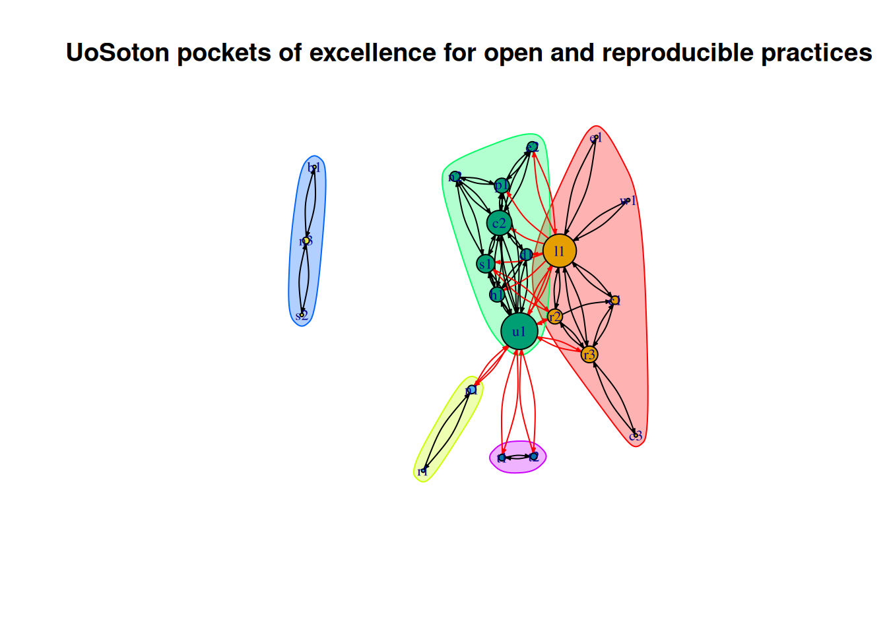

u1 = UKRN Local Network
l1 = Library
c1 = Centre for Higher Education Practice
p1 = Physical Sciences Data Infrastructure (PSDI)
s1 = Software Sustainability Institute
c2 = CaSDaR
d1 = Digital Preservation Southampton
h1 = Hidden REF
n1 = School of Healthcare Enterprise and Innovation
t1 = Open Science in Psychology (PSYC6136)
t2 = Training in Research Output Sharing
e1 = Eprints Services
n2 = National Crystallography Service / National Electron Diffraction Facility
s2 = Southampton Clinical Trials Unit (SCTU)
e2 = Electronic Research Notebooks (ERNs) project
n3 = NIHR Southampton Clinical Research Facility (NIHR CRF)
r1 = Research On Research Registry and Hub
c3 = The Cancer Genome Atlas (TCGA) Pan-Cancer paired gene expression tool
w1 = WorldPop
b1 = Biomedical Research Center (NIHR BRC)
r2 = ReproducibiliTea
r3 = Research England Enhancing Research Culture funding University of Southampton Reproducible and Transparent Research Practices Map
Steven Vidovic ![]()
The University of Southampton Reproducible and Transparent Practices
The University of Southampton has numerous pockets of excellence practicing reproducible and transparent research best practices, broadly contributing to Open Research, Research Integrity, and Research Culture. Here we attempt to “map” those pockets of excellence, considering tools, training, activities, infrastructure, networks etc. which create, promote, and enable these practices.
Methodology
Data collection
A table was created containing columns headed: Activity/centre (name); Class descriptor (e.g. network, infrastructure etc.); Description (an explanation of the activity/practice(s)); People/depts.; Collaborate w/; Engage w/; Share people w/. This table was pre-populated with some activities, infrastructures, and networks supporting Open Research by the UK Reproducibility Network (UKRN) Institutional Lead with assistance from the UKRN Local Network Lead and colleagues contributing to the management of the UKRN local network.
Following the initial population with examples the table was shared with the University’s Associate Deans Research, other members of its Open Research Group, and Deputy Heads of School Research for all schools to encourage completion of the table, or forwarding the opportunity to relevant stakeholders. Specific activities or centres of reproducible and transparent research practices were recorded as individual rows, their contributions were described, and their inter-relationships were recorded.
Relationships were recorded by giving each activity/centre an ID and recording that ID in any rows where there was engagement, collaboration, or the sharing of staff between activity/centres.
Analysis
Analysis was performed in R using the packages below.
install.packages("sna") # "social network analysis" for network analysis functions
install.packages("readr") # reads .xls and .csv files
install.packages("igraph") # for network functions
install.packages("tidyverse") # for cleaning up tables/data frames
install.packages("tidygraph") # for cleaning up graphs
library("sna")
library("readr")
library("igraph")
library("tidyverse")
library("tidygraph")A .csv file was brought into the system.
# Bring the dataset into R as a dataframe
input_data<-read.csv(file.choose())To ensure the R script is reusable and not overly prescriptive regarding the dataset layout, it prompts the user to identify the column containing the row IDs.
# define the IDs for the nodes from the list in the console
{
cat("Available columns:\n")
print(names(input_data))
ID_col <- readline(prompt = "Enter the name of the column containing the index IDs: ")
}
{
if (!(ID_col %in% names(input_data))) {
stop("Column name not found. Please check spelling and try again.")
}
df_IDs <- input_data[[ID_col]]
}
Masterdata<-as.data.frame(df_IDs)Similarly, users can identify columns containing relationships. If multiple kinds of relationships are recorded and the user would like to combine them before running the analysis, multiple column names can be entered and comma separated. Alternatively, users could rerun the analysis, selecting different relationship record columns each time. For the purpose of this analysis, the engagement, collaboration, and sharing of staff relationship records were combined for each row of the data frame.
# Show column names and prompt the user to select all columns with relations
{
# Show available columns
cat("Available columns:\n")
print(names(input_data))
# Prompt user to enter column names (comma-separated)
relation_cols_input <- readline(prompt = "Enter one or more column names containing relation IDs (comma-separated): ")
}
{# Split and trim input into a vector of column names
relation_cols <- strsplit(relation_cols_input, ",")[[1]] %>% trimws()
# Validate column names
invalid_cols <- setdiff(relation_cols, names(input_data))
if (length(invalid_cols) > 0) {
stop(paste("Invalid column name(s):", paste(invalid_cols, collapse = ", ")))
}
# Combine values from selected columns row-wise
df_relations <- input_data %>%
select(all_of(relation_cols)) %>%
unite("combined_relations", everything(), sep = "; ", na.rm = TRUE)
}
# Clean each row
df_relations$cleaned_relations <- sapply(df_relations$combined_relations, function(x) {
# Split by semicolon
items <- unlist(strsplit(x, ";\\s*"))
# Remove empty strings and duplicates
items <- unique(items[items != ""])
# Recombine into a single string
paste(items, collapse = "; ")
})
Masterdata$relations<-df_relations$cleaned_relationsFrom the new data frame with combined relationships, edges (i.e. connections) and nodes (i.e. activity/centres) can be recorded as lists. From the lists, an adjacency matrix can be produced for network analysis.
# Create edge list from Masterdata
edge_list <- Masterdata %>%
rowwise() %>%
mutate(targets = strsplit(relations, ";\\s*")) %>%
unnest(targets) %>%
filter(targets != "") %>%
distinct(df_IDs, targets)
# Get all unique nodes
nodes <- sort(unique(c(Masterdata$df_IDs, edge_list$targets)))
# Create adjacency matrix
adj_matrix <- matrix(0, nrow = length(nodes), ncol = length(nodes),
dimnames = list(nodes, nodes))
# Fill matrix with 1s for directed edges
for (i in 1:nrow(edge_list)) {
from <- edge_list$df_IDs[i]
to <- edge_list$targets[i]
adj_matrix[from, to] <- 1
}From the adjacency matrix, directed asymmetric relationships are generated between dyads (i.e. pairs of nodes) using the igraph package. From these relationships the degree, betweenness, and closeness centralities can be calculated.
# Convert to igraph object
g <- graph_from_adjacency_matrix(adj_matrix, mode = "directed", diag = FALSE)
# Degree centrality
degree_centrality <- degree(g, mode = "all")
# Betweenness centrality
betweenness_centrality <- betweenness(g)
# Closeness centrality
closeness_centrality <- closeness(g)
# Print summary
centrality_df <- data.frame(
Node = V(g)$name,
Degree = degree_centrality,
Betweenness = betweenness_centrality,
Closeness = closeness_centrality
)
print(centrality_df[order(-centrality_df$Degree), ])It is possible to plot different kinds of network analysis graphs and calculate communities from the results. The first graph represents the networks and communities of different pockets of excellence practicing or promoting reproducible and transparent research practices. Below is an explanation of how an interactive graph was generated.
communities <- cluster_walktrap(g)
plot(communities, g,
vertex.size = degree_centrality,
vertex.label.cex = 0.7,
edge.arrow.size = 0.2,
edge.curved = 0.2,
main = "UoSoton pockets of excellence for open and reproducible practices")Visualisation
To produce an interactive graph, with tooltips, which can display the activity/centre description the package, visNetwork was used. The following settings were used for the purposes of sharing the output of this analysis.
install.packages("visNetwork")
library(visNetwork)
# Create edges data frame for visNetwork
edges_df <- data.frame(
from = edge_list$df_IDs,
to = edge_list$targets,
arrows = "to", # Directed edges
stringsAsFactors = FALSE
)
# Function to insert <br> every N characters
wrap_text <- function(text, width = 40) {
sapply(strwrap(text, width = width, simplify = FALSE), function(x) paste(x, collapse = "<br>"))
}
# Create nodes data frame for visNetwork
nodes_df <- data.frame(
id = nodes,
label = input_data$Activity.centre[match(nodes, input_data[[ID_col]])],
title = wrap_text(paste0("<b>",input_data$Activity.centre[match(nodes, input_data[[ID_col]])],"</b><br>", input_data$Description[match(nodes, input_data[[ID_col]])])),
value = degree_centrality[match(nodes, names(degree_centrality))],
stringsAsFactors = FALSE
)
# Create interactive network graph with tooltips
visNetwork(nodes_df, edges_df, width = "100%", height = "700px") %>%
visNodes(shape = "dot", scaling = list(min = 5, max = 50)) %>%
visEdges(arrows = "to", smooth = TRUE) %>%
visOptions(
highlightNearest = list(enabled = TRUE, degree = 1, hover = TRUE),
nodesIdSelection = list(enabled = TRUE, useLabels = TRUE)
) %>%
visInteraction(hover = TRUE, tooltipDelay = 100) %>%
visLayout(randomSeed = 123) %>%
visPhysics(stabilization = TRUE)Results
Key
Betweenness and closeness output
Node Degree Betweenness Closeness
u1 u1 22 146.1238095 0.04000000
l1 l1 20 103.5071429 0.04347826
c2 c2 15 21.2380952 0.02941176
s1 s1 11 13.6404762 0.02857143
r3 r3 10 38.7000000 0.03030303
h1 h1 9 0.6666667 0.02702703
p1 p1 9 10.4047619 0.02702703
r2 r2 9 9.6023810 0.03125000
d1 d1 7 0.0000000 0.02631579
e2 e2 6 4.4500000 0.02702703
n2 n2 6 0.6666667 0.02127660
c1 c1 5 0.0000000 0.02631579
n1 n1 5 34.0000000 0.02500000
n3 n3 4 2.0000000 0.50000000
t1 t1 4 0.0000000 0.02439024
t2 t2 4 0.0000000 0.02439024
b1 b1 2 0.0000000 0.33333333
c3 c3 2 0.0000000 0.02000000
e1 e1 2 0.0000000 0.02500000
r1 r1 2 0.0000000 0.01754386
s2 s2 2 0.0000000 0.33333333
w1 w1 2 0.0000000 0.02500000This analysis demonstrates highest closeness centrality in the UKRN Local Network and the Library, respectively – this is the average geodesic distance from a given node to all other nodes in the network. Both the UKRN Local Network and the Library are relatively central and well connected within the largest connected cluster. There are four distinct communities within this cluster, comprising the School of Healthcare Enterprise and Innovation and its activities and links; Open Science training in Psychology, offered by one member of staff and UKRN Local Network member; the UKRN Local Network and other networks and initiatives which share an interest in reproducible and transparent research practices; and the Library alongside other Professional Services infrastructures, funding, and those benefiting from those services but not currently engaging with the wider network. There is a fifth distinct community comprising of NIHR infrastructures which support reproducible and transparent practices, but there is no recorded symmetric or asymmetric engagement between this cluster and the other in respect to these practices and principles.
In the largest cluster, the Library and the UKRN Local Network have the greatest betweenness centrality, respectively. This is the extent to which a given node lies on a path between others.
Network analysis graph with community clusters

Interactive network graph
Discussion
A node with high closeness centrality is efficient at communicating. Therefore, based on this analysis, the Library and UKRN Local Network are the most advantageously placed to communicate reproducible and transparent research practices. One node is an infrastructure, being part of the University’s Professional Services, and the other is an organisational network, which means they are well placed to work collaboratively. However, both nodes occupy a similar space and share many relationships, demonstrating a degree of homophily.
In the cases of the School of Healthcare Enterprise and Innovation and the School of Psychology, individual UKRN Local Network members are acting as bridging ties between activities in their respective groups. Therefore, these links are valuable, but potentially vulnerable.
Despite some vulnerable bridging ties and a degree of observable homophily, popularity and transitivity are observably fostering improved connectivity within the network. The Library is a good example that popularity – i.e. the propensity to establish more ties is increasingly likely for nodes with more existing ties – can grow the influence of an infrastructure over others in specific areas of interest – in this case, Open Research. Transitivity – the dependence between triplets, i.e. a friend of a friend is also a friend – can also be observed numerous times between the UKRN Local Network e.g. with ReproducibiliTea, PSDI, Software Sustainability Institute, CaSDaR etc. Indeed, it was through some of these ties that the multi-departmental CaSDaR funding bid was established.
Conclusions
Through this exercise 22 activities or centres of activity were identified. Those ranged from individual initiatives to deliver training, to funded activities to improve reproducibility, to established enterprise units, organisational networks, funding, infrastructures and services. The time and network limitations of this self-reporting study mean that it is possible for more nodes to be added in future, but it is likely those will have weak bridging ties or will be distinct communities.
Popularity and transitivity have the potential to grow the influence of the UKRN Local Network and Library over time. However, the mechanisms underpinning the observed homophily present a limiting factor. The purpose of the UKRN is to “enable researchers and research-enablers, academic institutions, and other sectoral organisations working in the UK research system to collaborate, so they are better able to conduct and promote rigorous, reproducible, and transparent research” (https://www.ukrn.org/terms-of-reference/, retrieved 29/10/2025). Therefore, efforts should be made to increase reciprocity between the UKRN Local Network and diverse research disciplines and practices, and where possible links should be established or strengthened with individuals, networks, and infrastructures in those areas to take advantage of the transitivity and popularity effects.
Future improvements
Colour coding ties: Reintroducing information about the level of engagement, collaboration, or sharing of staff into the output graphs through colour coding of ties could help visualise the strength of the networks.
Re-running the exercise: Re-running the exercise in the future could demonstrate how the network changes over time and highlight effective interventions.
Replication studies: This output has been produced in R using Quarto, it is shared in a GitHub repository and can be adapted, reused, and built upon. The University of Southampton case study can act as a point of reference for other similar studies.
Acknowledgements
Thank you to all those who reviewed and contributed to the compilation and editing of the underpinning dataset. This includes the University of Southampton UKRN Local Network, Associate Deans Research, Members of the Open Research Group, Deputy Heads of School Research, and their colleagues.
Contributor roles
Steven U. Vidovic (author): Conceptualization, Data curation, Formal analysis, Investigation, Methodology, Project administration, Resources, Software, Supervision, Visualization, Writing - original draft, and Writing - review & editing.
Christian Bokhove (contributor): Conceptualization.
Kate F. Goldie (contributor): Data curation, Project administration, and Writing - review & editing.
Use of Artificial Intelligence
Artificial intelligence (AI) tools were used to assist with the writing and debugging of R scripts in this project. Specifically, Microsoft Copilot (version: February 2025) was employed. All AI-generated content was thoroughly reviewed by the author, who has full understanding of the script’s functionality and remains fully accountable for its accuracy and integrity. The author affirms that all intellectual contributions, decisions, and validations were made independently and responsibly.
License: This work is licensed under a Creative Commons Attribution 4.0 International License.